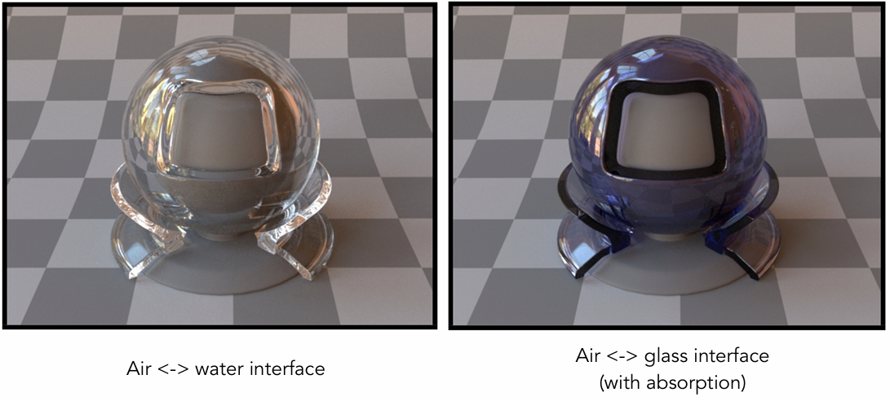
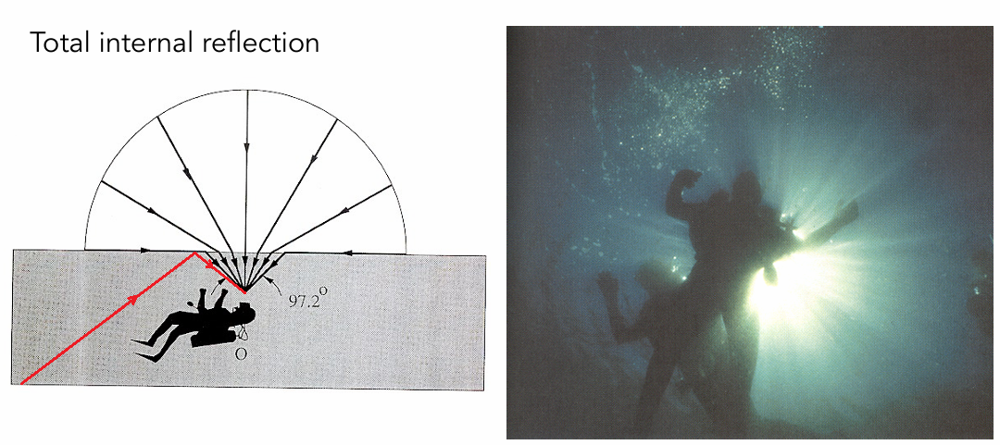
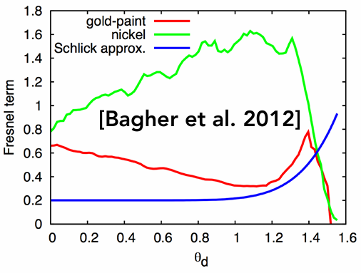

GAMES101课程笔记（六）——Materials and Appearances
引言
书接前文，我们结束了有关光线追踪的部分，这次文章我们来介绍相对轻松的一个部分——材质和外观（不如说光追之后的部分其实都挺轻松的）。
这个部分其实与光追中提到的BRDF息息相关，因此本篇中将会经常涉及到这一概念，对此不熟悉的读者可以参阅此前的光线追踪一文。经过本篇，相信各位读者一定会对光在散射时的细节有更深层次的了解，并在此基础上学习如何在计算机中对各种材质进行渲染，表现出不同的效果。
话不多说，我们直接进入正文。
前文指路：
GAMES101课程笔记（一）——Transformation
GAMES101课程笔记（二）——Rasterization
Material——材质
虽然我们一直在说材质这个词语，但从来没有系统地分析过这到底是什么东西，首先来看下面这个例子：
上图中的三杯咖啡使用的是同一个网格模型，当应用不同的材质后，便呈现出完全不同的效果，我们在光线追踪一文中涉及了很多公式，但到底是哪一部分决定了材质的样式？答案就是BRDF，应用什么样的材质，其实就是思考应用什么样的BRDF。
最简单的例子，下图表示的材质就是一个标准的漫反射材质：
它的应用效果如下所示：
接下来我们从BRDF的角度来理解漫反射材质，我们知道，只包含反射项的渲染方程为：
漫反射模型中，$f_r$是一个常数，同时我们再假设入射光是均匀的，因此$L_i(\omega_i)$也是一个常数，如下所示：
所以我们可以将渲染方程积分中的常数项提出并化简：
假设能量守恒，我们就能得到$f_r=\frac{1}{\pi}$，不过考虑到颜色的问题，我们可以定义一个反射率$\rho$，从而有：
这里的$\rho$可以是单通道的或者三通道（RGB）的，根据具体的实际问题进行选择。
下图展示了另外一种典型材质——Glossy：
这种材质类似于金属抛光的效果，从其示意图中可以看出，它具有一定的镜面反射特点，但反射光线仍在一定的角度里扩散。
以下是该材质的效果图：
当加入折射光后，就可以表现透明材质：
例如水、玻璃等材质，都能用这种方式表达，如下所示：

反射与折射
反射与折射是光学中两个老生常谈的话题，图形学与它们间的关系也非常密切，这里我们重新介绍一下它们。
从之前的内容中也能看出，目前我们谈及光时，一般都只涉及几何光学，而不涉及波相关的性质，这里同样如此。
反射
反射是一种物理现象，指波阵面从一个介质进入另一个介质时，部分或全部的波在两介质界面处，传播方向发生改变且返回原介质的现象，这里只谈论光的反射。
光在反射时，一个最基本的性质就是入射角$\theta_i$等于反射角$\theta_o$，如下图所示：
因此，我们可以简单地写出入射方向和出射方向之间的关系式：
（注意，这里的入射方向和出射方向起点都是反射点）
从而获得出射方向的计算式为：
当我们俯视观看反射时，入射光和反射光的方向看上去是相反的（上图右）。
完美的反射BRDF应该会使模型表面呈现出极度光滑的镜面材质：
折射
同样，该部分我们只讨论光的折射，折射是指光在穿越介质或经历介质的渐次变化时传播方向上的改变。
日常生活中常见的折射场景包括玻璃、海洋等，如下所示：
这的一提的是，右下角这种现象有一个专门的名词——Caustics，中文译名为焦散。这种现象的出现是因为光线在晃动的水面产生折射后，刚好集中在了某些区域，形成了亮斑，这在图形学中是一个有点困难的问题，有兴趣的读者可以去深入了解下。
折射相较于反射，稍稍复杂一点，因为折射角的大小与光线穿越的介质有关，如下所示：
假设上下两种介质的折射率分别是$\eta_i$和$\eta_t$，它们与入射角和折射角之间满足关系：
（其实就是菲涅尔定律）
当我们俯视观看折射时，入射光和折射光的方向看上去同样是相反的（上图右，这里换了一种公式表达）。
我们更深入地了解一下折射，根据三角函数公式，我们有：
将刚才的折射公代入，有：
此时，如果出现：
那么上式就没意义，也就意味着不会发生折射，而我们知道$\sin^2{\theta_i}\leq 1$，因此只有当折射率满足：
才有可能出现该式无意义的情况，所以我们可以得出一个结论：
当光线从一种介质射向另一种介质时，若当前介质的折射率大于另一介质的折射率，则可能不出现折射现象。
若不考虑光线衰减和物体吸收能量，此时介质表面只发生全反射。
现实生活中有一个例子，就是当潜水时，如果人看向水面，只能看到一个锥形部分的光线：

在这里折射率的比值没有发生改变，由于水的折射率大于空气的折射率，水面上方180°的光线被折射为约90°的视角（图左黑色光线）。
而对于更大角度上的观察，根据刚才的公式，这部分的光线全部来自于水底的全反射（图左红色光线），多数情况下，这部分光线都衰减到十分微弱，因此看上去是暗的。
事实上，在光线和水深合适的情况下，周围其他区域也可以呈现出对应的颜色，如下图，锥形外的区域反射了水底的蓝绿色：
这种现象称之为Snell’s Window，在很多影视作品中都有出现。
BRDF、BTDF与BSDF
值得一提的是，我们一直在讨论BRDF，这里的R指的其实只有反射（Reflectance），并不包含折射（其实英语原文是Transmittance，一般叫透射），所以当我们描述折射时使用的应该是BTDF，二者统称为BSDF，S指Scattered，中文为散射。
不过一般提到BRDF时，也会一并把折射考虑进来，这个就属于是称呼习惯了，具体语境中再说，这里只是做一个严谨的科普。
刚才我们介绍反射和折射时，我们都涉及了两个视角：
- 从侧面看，此时视线垂直于入射光和出射光所在的平面。
- 从上方看，此时视线为竖直方向。
以反射的这张图为例：
第一种视角对应左图，这里的$\theta_i$和$\theta_o$称之为入射角和出射角；第二种对应右图，这里的$\phi_i$和$\phi_o$称之为入射天顶角和出射天顶角。
BSDF描述光在一个表面上的入射和出射方向上的情况，因此该函数是一个四维函数，如下所示：
Fresnel Reflection——菲涅尔项
观察下图桌面：

不难发现，当视线的入射角增大时，桌面上书本的倒影更加明显，这意味着该方向上反射的能量更多，这说明一个问题：
光线的反射与入射角的角度有关。
（事实上折射也相关）
菲涅尔项就用于描述这一相关关系，下图是折射率为1.5的绝缘体的菲涅尔项曲线：
这里的蓝绿两条曲线代表光在S和P方向上的偏振光，这属于波动光学的范畴，这里不详细展开，有空的话可以开篇文章聊聊（坑*n）。
我们只关注红色曲线，它在数值上等于蓝绿两条曲线的均值，可以看出反射随着入射角的增大变得更加强烈，与之前桌面上的倒影情况一致。
注意，并不是所有介质的菲涅尔项都是这样的单调递增函数，例如对于某金属而言，其菲涅尔项如下：

（导体的折射率为复数）
如果要计算菲涅尔项，就得先计算S偏振光和P偏振光，计算公式为：
这里的$n_1$和$n_2$代表入射介质和透射介质的折射率，$\theta_i$和$\theta_t$代表入射角和折射角。
取均值，获得菲涅尔项：
不过这种计算方法比较繁琐，为了计算的方便，我们假设反射在0°时有一个基准反射$R_0$，在入射角为90°时达到1，用该函数来拟合：
这个函数就是Schlick’s approximation，在一般情况下都是一个非常良好的近似。
Microfacet Material——微表面材质
首先来看课程中的一张图：
可以看到图中渲染的是我们的地球，不过假如我们仔细推敲这张图的话，似乎有一点问题：地表上应该有很多地形，在图中却呈现出类似镜面反射的效果。
但其实是因为我们的观测距离足够远，远到我们可以忽略掉这些“粗糙表面”，微表面材质正是基于这一思想，即：
当观测距离足够远，我们就无法看到表面上的微小细节，只能看到整个表面对光的总体效应。
微表面模型的示意图如下：
它的特点如下：
- 在Macroscale下（从远处看），表面是一个粗糙的平面
- 在Microscale下（从近处看），表面包含凹凸不平的微元，每个微元视为一个微小镜面
（其实漫反射也是这样一个模型，每个微元反射光线，从宏观上看就是向所有方向反射）
其中这个微元称之为Microfacet，我们现在可以从Microfacet的角度，重新去理解光滑表面和漫反射表面。
假如我们的Microfacet法线基本朝向一个方向，那么表面看上去就是光滑的，如下所示：
反之，如果各个Microfacet的法线散布非常混乱，朝向各个方向，那么整个表面看上去就是漫反射的：
也就是说，通过微表面模型，我们可以用表面Microfacet的法线分布来表达材质。
下图展示的就是这一方法的具体过程：
$f(i,o)$代表BRDF，它的计算式中，$F(i,h)$是表面的菲涅尔项，前文已经介绍过。
我们先重点来看$D(h)$这一项，$D(h)$代表表面的Microfacet中，法线朝向为$h$的分布，$h$是$w_i$和$w_o$的半程向量。这并不难理解，因为只有朝向为$h$的Microfacet，才能将光线从$w_i$反射到$w_o$。
然后是项$G(i,o,h)$，这是阴影遮挡项，由于表面存在凹凸不平的Microfacet，某些方向的光会因为其他Microfacet的遮挡，无法照射到特定Microfacet上，尤其是在光线与平面几乎平行时，这种情况更容易发生，这一项的引入正是为了处理这一问题。
这种与平面几乎平行的角度称之为Grazing angle，它经常会出现在一些物体的边缘上，例如渲染一个球时，对于其边缘的表面，我们的观察角度其实就是一个Grazing angle，此时$G(i,o,h)$就会起作用，以正确渲染边缘。
以下是使用微表面模型的渲染结果：
可以看出，微表面模型非常强大不论金属、皮革还是木材，都有非常不错的渲染效果。
Isotropic/Anisotropic Materials——各向同性/各向异性材质
在坐电梯时，我们时常会看到如下的情况：
按照我们的渲染知识，光在照射到电梯内壁时形成的高光，理应是椭圆形的，但在现实中却呈现出图中的条状，这是因为该材质并非简单的镜面反射，而是一种各向异性材质。
在Shading一节中，我们曾介绍过各向异性过滤，两个各向异性的含义是相同的，都是指在不同方向上有所不同。
对于各向异性材质，指的就是该材质对于不同方向上的光照，呈现出不同的效果。
此前我们都假设，材质是没有方向性的，即各向同性，如下所示：
这就是刚才我们所假想的，椭圆形高光的由来，各向同性材质上的Microfacet法线分布非常不规则，因而在宏观上呈现为镜面。
而各向异性材质表面的Microfacet法线分布，会因为其排列方式，让光在不同方向上的反射不同，如下图中的例子：
该材质中，法线的分布集中于左右，几乎没有上下的法线，因此同样被光照射后，左右的反射更强，故而出现横条状的结果。
如果从BRDF的角度来定义各向同性/各向异性材质，就需要看在把表面转过任意角度$\phi$后（从俯视角看），BRDF是否改变，即判断：
该等式是否恒成立，若是，则该材质为各向同性材质；反之，则为各向异性材质。
这里还有一个各向异性材质的实例，就是我们日常使用的厨具：
从视觉效果上，我们其实也能或多或少推断出其表面的法线分布。
BRDF性质
接触了这么多BRDF相关的知识后，我们就可以来总结一下BRDF的性质了。
非负性
这个很好理解，因为反射出去的能量肯定是非负的，不可能出现负能量的情况。
线性
我们之前介绍Blinn-phong模型时就使用过这一性质，当时我们分别计算了漫反射、高光和环境光，最后再相加起来。
其实这一方法可以推广到各种BRDF上，如下图：
我们可以分别计算一部分BRDF的结果，最后再相加起来，其效果等同于计算总BRDF的结果。
可逆性
由于光路可逆，BRDF自然也具有可逆性，交换入射方向和出射方向，BRDF值不变。
能量守恒
上式假设入射的所有能量为1，无论如何反射，反射出的能量绝对不可能超过入射能量。
各向同性材质
前文提到过，如果把表面转过任意角度$\phi$后（从俯视角看），BRDF没发生改变，那么该表面材质就是各向同性的。
原来的BRDF需要四个参数：$\theta_i$、$\theta_o$、$\phi_i$和$\phi_o$，对于各向同性材质来说，就不需要特别指明$\phi_i$和$\phi_o$，只需要知道天顶角的夹角即可，即：
从而使得BRDF降维到了三维，依据可逆性，等式右边可以推广为：
BRDF测量
说了这么多，我们的BRDF仍然都只是在理论层面上，而理论模型与实际之间是可能存在很大差异的，例如下图：

这是一个菲涅尔项的曲线，其中蓝色的是前文我们提到的近似模型，而绿线红线是两次测量值，可以看见存在非常大的差异。
因此，面对理论模型难以解决的情况，我们可以直接测量现实材质的BRDF，并直接利用测量数据，从而达到真实的渲染效果。
一种最简单的办法就是遍历所有的入射出射方向对，逐个进行测量，如下所示：

现实中就有这种测量工具的实例，如图：
该机器利用两个机械臂，尽可能地测量所有入射出射方向对上的反射情况，获得BRDF。
可以使用一点技巧来提升BRDF测量的效率，例如：
- 假定材质是各向同性的，减少BRDF维度
- 利用可逆性，减少一半的测量量
- 使用预测技术，只测量部分BRDF，其余部分使用预测值
那么有关材质和外观的内容就到此为止了，我们下一篇文章见！